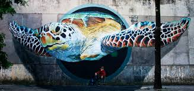
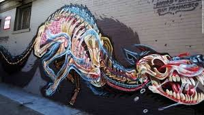
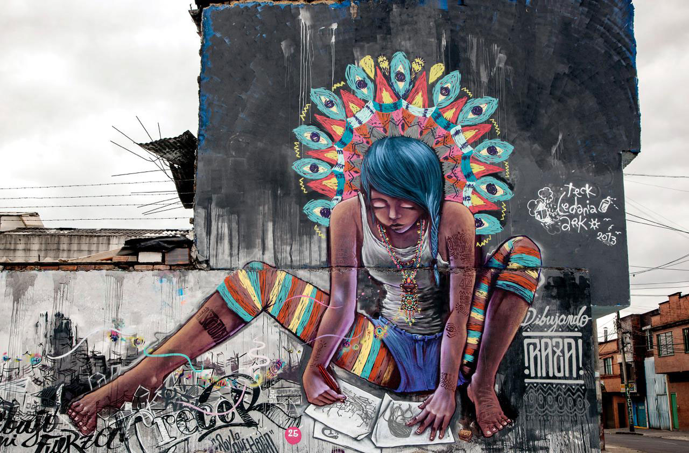
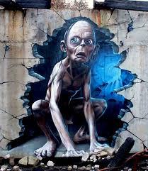

EL ESTILO DE LOS COLORES - DISEÑADOR GRAFICO
En mi comienzo de diseñador me han enseñado a ser imaginativo y a ser perfeccionista,Esta es una carrera de dedicacion y esfuerzo

EL ARTE URBANO
arte urbano o arte callejero, traducción de la expresión street art, hace referencia a todo el arte de la calle, frecuentemente ilegal. El arte urbano engloba tanto al graffiti como a otras diversas formas de expresión artística callejera

Los graffitis
Entendida como una de las expresiones de arte urbano más populares y características de la actualidad, el graffiti no es más que un dibujo o una obra de arte pictórica realizadas en las pares y muros de la calle. Así, el graffiti no se mueve o muestra dentro de círculos intelectuales o privados de arte sino que se caracteriza por ser expuesto de manera pública para que todos lo vean y disfruten día a día.

EL graffiti es arte
El graffiti es por lo general anónimo y puede tener diferentes objetivos en lo que respecta a la razón de su realización: mientras algunos son meramente artísticos, otros son formulaciones políticas, otros de protesta y muchos otros son simples mensajes sin mayores pretensiones. Es algo que se ve todo el tiempo

Que de muestran
los graffitis de muestran varios cosas como sentimientos realidades del muendo cosas que estan pasando en el mundo o cosasa que van a pasar el arte urbano es muy genial y muy lindo a la vista .